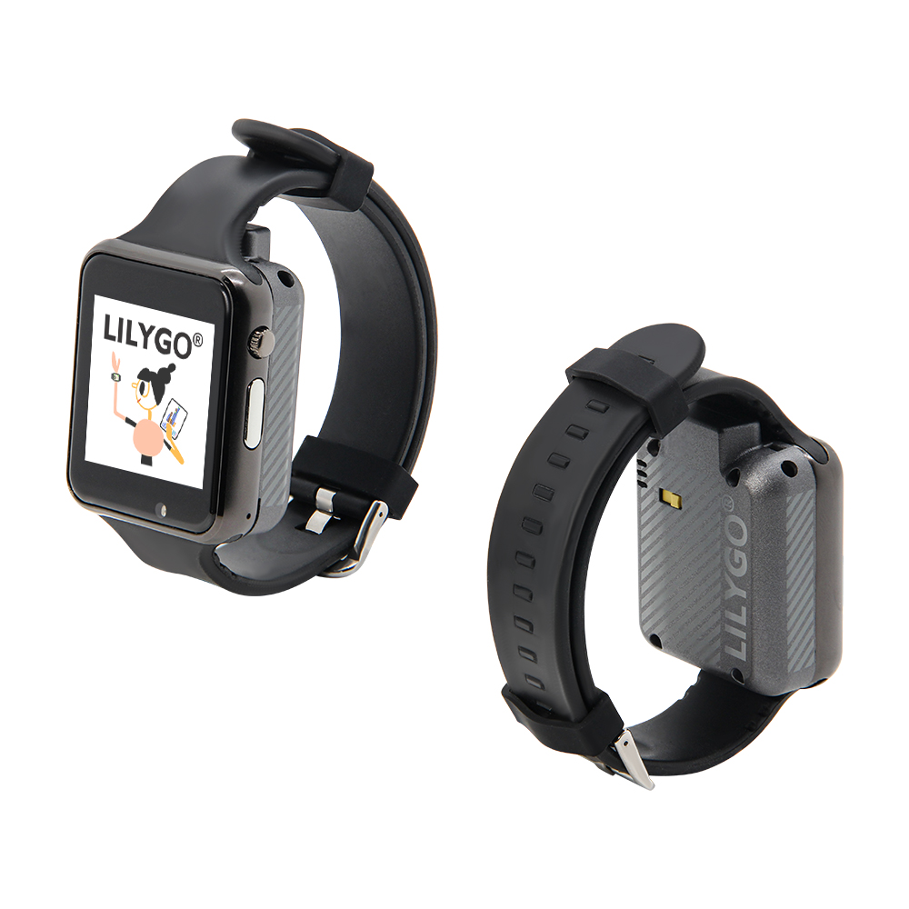
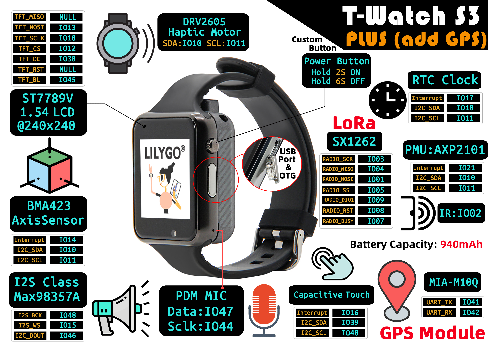

English
EnglishLILYGO T-Watch S3 Plus

Introduction
The T-Watch S3 Plus version builds upon the T-Watch S3 by adding GPS functionality. Like the T-Watch S3, it is a multifunctional smart wearable device that integrates high-performance hardware and wireless communication technology, making it suitable for sports health monitoring, remote interaction, and audio applications.
Its core specifications include a 1.54-inch 240x240 HD LCD display, a BMA423 motion sensor, and a capacitive touch module for precise motion tracking and responsive touch operations. It also features a Max98357A audio amplifier and a PDM microphone, enabling high-quality audio output and voice command input.
Currently, the T-Watch S3 Plus is available in two versions: 1262 and 1280. It incorporates an RFC clock module, facilitating long-range, low-power wireless communication, making it ideal for IoT and industrial sensing applications.
With its compact design and integration of motion tracking, voice interaction, and remote communication, the T-Watch S3 Plus is well-suited for diverse applications such as outdoor adventures, health monitoring, and smart home control, combining both technological sophistication and practicality.
Appearance and function introduction
Appearance
Pinmap
Module Information and Specifications
Description
The T-Watch S3 Plus meets the needs of developers who want to experiment with LoRa and ESP32 S3 technology in wearable devices. It is highly customizable and suitable for various applications.
| Component | Description |
|---|---|
| MCU | ESP32-S3 |
| FLASH | 16MB |
| PS RAM | 8MB |
| RTC | 8MB |
| Axis Sensor | BMA423 (IIC) |
| Wireless | Wi-Fi: 802.11 b/g/n; BLE V5.0 |
| LoRa | SX1262，SX1280 frequency bands:433~915HMZ(optional) |
| Haptic Motor | DRV2605 (IIC) |
| PMU | AXP2101 Highly integrated power management unit |
| USB | 1 × USB Port and OTG(micro) |
| button | 1 x POWER button (hold down for 2 seconds to power on, hold down for 6 seconds to power off) + 1 x BOOT button (built-in) |
| Audio Output | Max98357A(IIC) |
| Audio Input | PDM MIC |
| Display | 1.5inch LCD Screen 240 × 240(SPI) |
| Touch | capacitive touch screen (IIC) |
| Power | 5V/500mA input |
| Dimensions | No strap 51.5x42x20mm |
Related Links
Github:T-Watch S3 Plus
Schematic Diagram
Dependency Libraries
Software Design
Arduino Set Parameters
| Setting | Value |
|---|---|
| Board | ESP32S3 Dev Module |
| Upload Speed | 921600 |
| USB Mode | UART0/Hardware CDC |
| USB CDC On Boot | Enabled |
| USB Firmware MSC On Boot | Disabled |
| USB DFU On Boot | Disabled |
| CPU Frequency | 240MHz (WiFi) |
| Flash Mode | QIO 80MHz |
| Flash Size | 16MB (128Mb) |
| Core Debug Level | None |
| Partition Scheme | 16M Flash (3MB APP/9.9MB FATFS) |
| PSRAM | OPI PSRAM |
| Arduino Runs On | Core 1 |
| Events Run On | Core 1 |